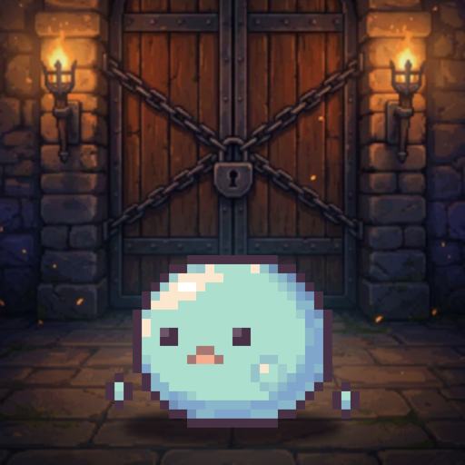

용사 출입금지: 운빨 디펜스
Heroes Keep Out: Luck of the Draw
던전에 쳐들어오는 용사들을 몬스터로 막는 아이폰 게임입니다. 몬스터를 뽑아 세우고, 30분 동안 던전을 지키세요.
An iPhone game where you stop the heroes raiding your dungeon. Draw monsters, line them up, and hold the dungeon for thirty minutes.